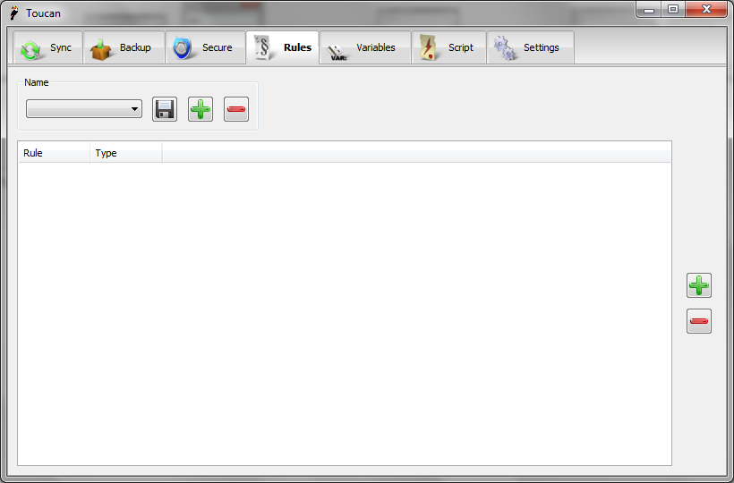
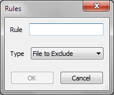

Rules¶
Overview¶
By default when you run a Job it runs on all of the sub-files and sub-folders of the files and folders you have selected, to modify this a set of Rules must be used. For example you can exclude specific files or folders, or even exclude a root folder and only include specific files and folders that you are interested in. There are three different type of rules in Toucan which are explained below.
- Files to exclude - Any files that you wish to exclude belong in
this category. It accepts a number of different types of input.
- Plain text - By default matching is performed as a simple plain text match, i.e. if the text you use as an exclusion can be found anywhere in the path Toucan is checking it will be excluded.
- Regex - If you prefix your exclusion with an asterisk (*) then the rest of the exclusion will be treated as a regex. If the regex then matches the path it will be excluded. For information about the syntax used please see the wxWidgets website.
- File size - To exclude files based on their size you need to begin your exclusion with either > or < and suffix it with B, kB, MB or GB with a number in the middle. For example >10GB will exclude files that are larger than 10 gigabytes and <1MB will exclude files smaller than 1 megabyte.
- Modified time - If you want to exclude a file based on the time it was modified then you need to prefix a date with either < if you want to exclude files earlier than it or > if you want to exclude files later than it.
- Folders to exclude - Any folder you wish to exclude belong in
this category, please note all sub-files / sub-folders are also
excluded. It accepts two types of input.
- Plain text - By default matching is performed as a simple plain text match, i.e. if the text you use as an exclusion can be found anywhere in the path Toucan is checking it will be excluded.
- Regex - If you prefix your exclusion with an asterisk ({*}) then the rest of the exclusion will be treated as a regex. If the regex then matches the path it will be excluded. For information about the surtax used please see the wxWidgets website.
- Locations it include - If you have previous excluded a folder
but you still wish some of its contents to be included you can add
them as locations to include. Both files and folders are accepted
although only plain text and regex matching is supported.
- Plain text - By default matching is performed as a simple plain text match, i.e. if the text you use as an exclusion can be found anywhere in the path Toucan is checking it will be excluded.
- Regex - If you prefix your exclusion with an asterisk ({*}) then the rest of the exclusion will be treated as a regex. If the regex then matches the path it will be excluded. For information about the surtax used please see the wxWidgets website.
Toucan uses the following order when determining whether a file or folded should be excluded.
- Firstly the path is expanded if it is a Variable (see below) and then matched against the list of locations to include. If any of these match then Toucan immediately carries on and uses the path.
- Otherwise it next compares the path to the list of folders to exclude, even if it is a file, because an excluded folder should exclude its sub-files unless they are specifically included. If any of these match then then path is ignored and Toucan moves on to the next path.
- Next the path is tested, if it is a file then it is matched ageist the files to exclude, if any of these match then it is excluded and Toucan moves onto the next path.
- Otherwise the path is not excluded and Toucan uses it.
User Interface¶

The top of the Rules dialog is home to the standard controls for saving, adding and removing Rules. The rest of the tab has a large list control that shows the rules defined in the current Rule set. Each entry shows the rule itself and what type of rules it is.
The Add Rules Dialog¶

When you add a new rule the Add Rule dialog is shown. This dialog actually validates your input, for example if you prefix your File To Exclude with an asterisk then only a valid regex will allow you to press the OK button to insert it into your set of Rules.